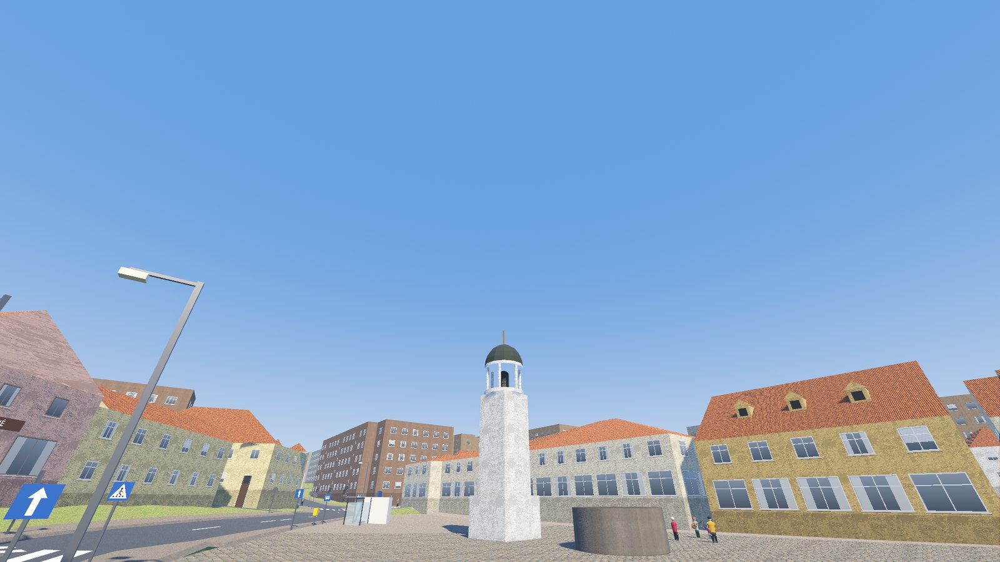
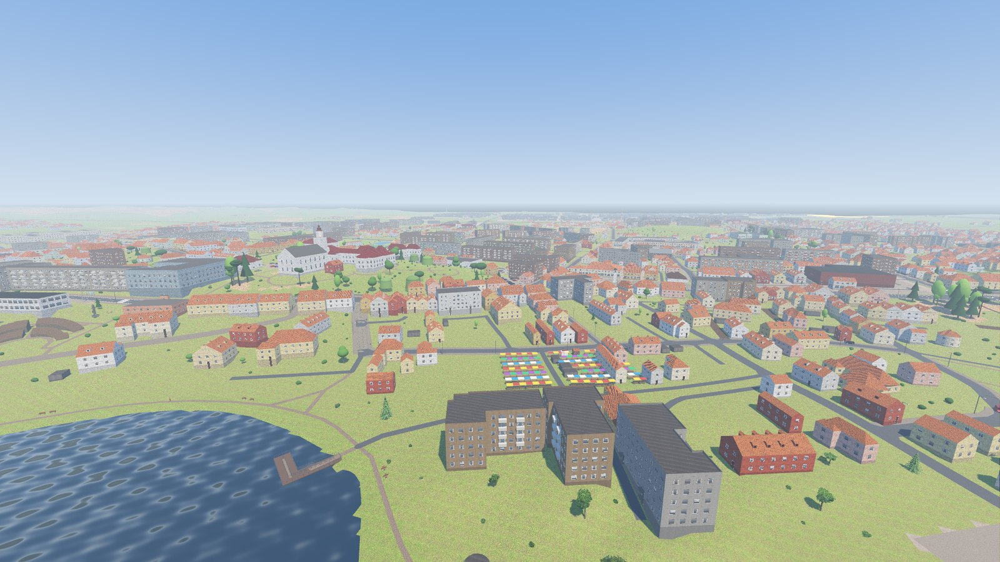
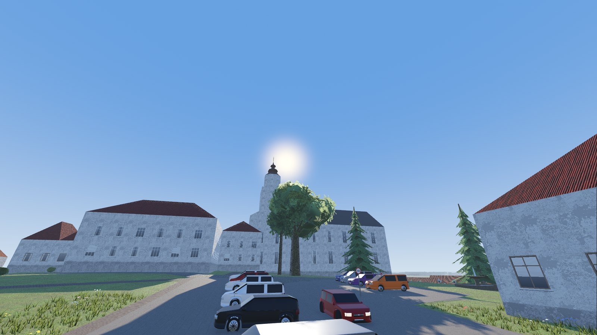
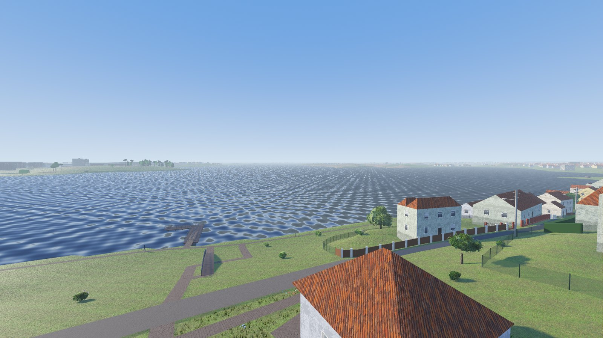
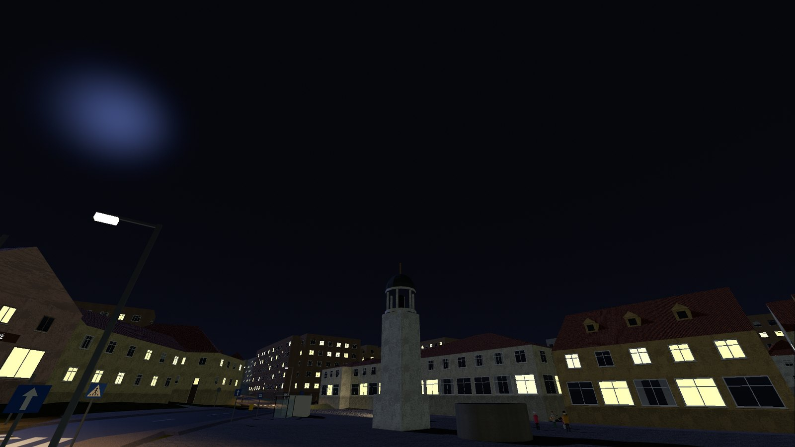
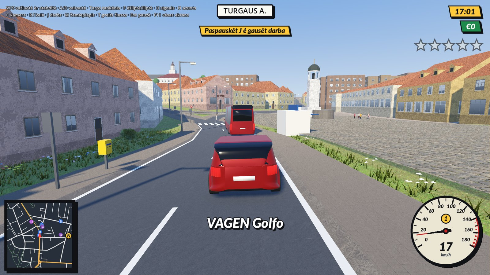
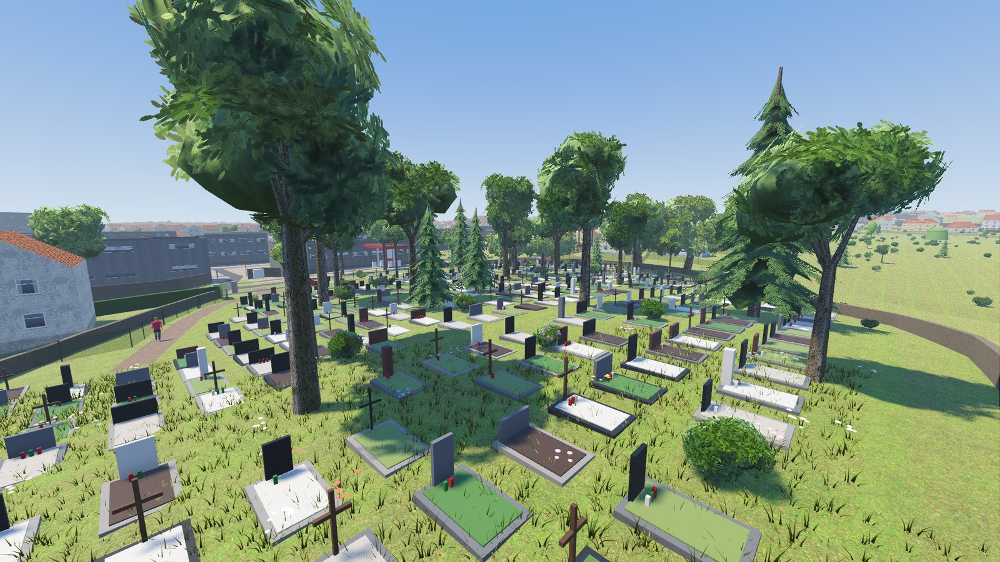
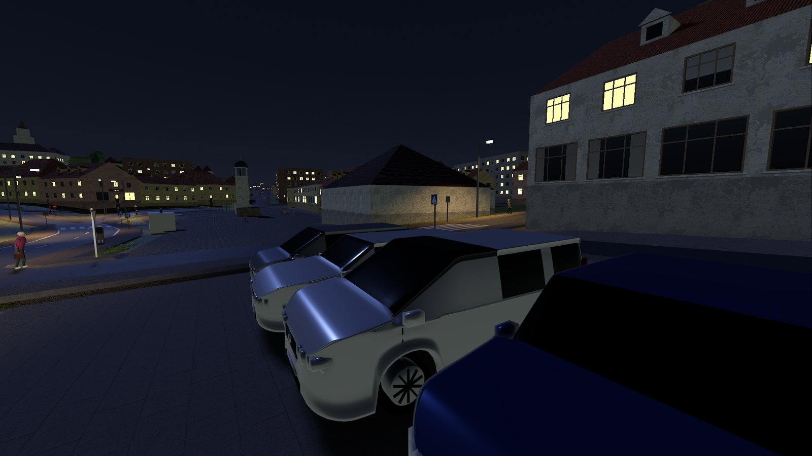
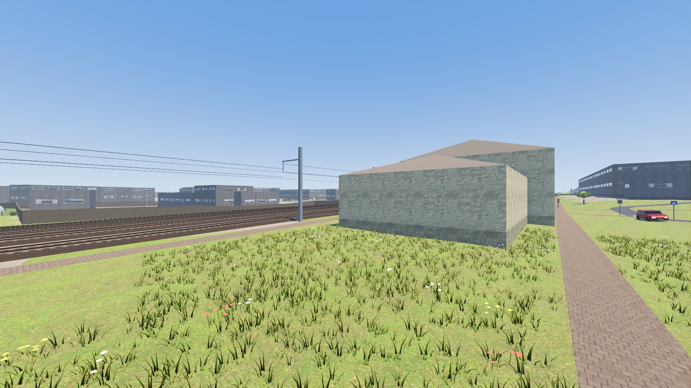

Aple žaidėma
Apie žaidimą
About
Tėkras gatvės, pastatā ė kalvas ėš atvėrūju doumenū. Važėnėk, vaikštėnėk, „pasėskuolėnk“ kėta mašėna, vežiuok keleivius ė siontas.
Tikros gatvės, pastatai ir kalvos iš atvirųjų duomenų. Vairuok, vaikščiok, „pasiskolink“ kito mašiną, vežiok keleivius ir siuntas.
Real streets, buildings and hills from open data. Drive, walk, “borrow” someone else's car, carry passengers and parcels.
Žaidėms kouriams. Ėš tuo patėis autoriaus — Kiedainē 3D.
Žaidimas kuriamas ir tobulinamas. Iš to paties autoriaus — Kėdainiai 3D.
The game is in development. By the same author — Kėdainiai 3D.
Kadrā
Kadrai
Screenshots









Kas vėdou
Kas viduje
Features
- Telšē 1:1 — daugiau kaip 10 000 pastatu, vėsos Mastė ežers so suolelēs, tilteliās ė prieplaukuoms
- Katedra, „Alka“, Žemaitėjės kaima muziejus so malūnu, dailės akademėjė, tėkrė miesta autobusu maršrutā
- Eisms, žmuonės, puolicėjė ė gaudīnės; darbā: taksi, siontas, picas, autobuss
- Žemaitėškā (lietoviu ė onglu kalbuos — nostatīmūs); diena ė naktės
- Telšiai 1:1 — daugiau kaip 10 000 pastatų, visas Masčio ežeras su suoleliais, tilteliais ir prieplaukomis
- Katedra, „Alka“, Žemaitijos kaimo muziejus su malūnu, dailės akademija, tikri miesto autobusų maršrutai
- Eismas, žmonės, policija ir gaudynės; darbai: taksi, siuntos, picos, autobusas
- Žemaitiškai (lietuvių ir anglų kalbos — nustatymuose); diena ir naktis
- Telšiai at 1:1 — over 10,000 buildings, all of Lake Mastis with its benches, footbridges and piers
- The cathedral, the „Alka“ museum, the village museum with its windmill, the art academy, the real town bus lines
- Traffic, people, police and chases; jobs: taxi, parcels, pizza, bus driver
- In Samogitian (Lithuanian and English in the settings); day and night
Valdīms
Valdymas
Controls
Sistemuos reikalavėmā
Sistemos reikalavimai
System requirements
Nieka diegtė nereik — nė Godot, nė Python, nė kėtu pruogramu. Žaidėma variklis ė vėsė doumenīs īr atsėsiōstam faile: ėšarchīvuok ė paleisk.
Nieko diegti nereikia — nei Godot, nei Python, nei kitų programų. Žaidimo variklis ir visi duomenys yra atsisiųstame faile: išarchyvuok ir paleisk.
Nothing to install — no Godot, no Python, no other software. The game engine and all data are inside the download: unzip and run.
Windows 10 arba 11, 64 bitu
Windows 10 arba 11, 64 bitų
Windows 10 or 11, 64-bit
macOS 10.15 Catalina ar naujesnė (Intel); macOS 11 ar naujesnė (Apple Silicon)
macOS 10.15 Catalina ar naujesnė (Intel); macOS 11 ar naujesnė (Apple Silicon)
macOS 10.15 Catalina or newer (Intel); macOS 11 or newer (Apple Silicon)
64 bitu (x86_64), glibc 2.28+ (Ubuntu 20.04, Debian 10, Fedora 29 ar naujesnė)
64 bitų (x86_64), glibc 2.28+ (Ubuntu 20.04, Debian 10, Fedora 29 ar naujesnė)
64-bit (x86_64), glibc 2.28+ (Ubuntu 20.04, Debian 10, Fedora 29 or newer)
Spausk „Naršīklie“: žaidėms atsėsiont ~95 MB ė pasėleid (Chrome, Edge, Firefox arba Safari so WebGL 2). Grafėka paprastesnė nego atsėsiontamuo versėjuo: bė gatvės baldu, kapu, tvuoru ė geležinkelė pabėgiu.
Spausk „Naršyklėje“: žaidimas atsisiunčia ~95 MB ir pasileidžia (Chrome, Edge, Firefox ar Safari su WebGL 2). Grafika paprastesnė nei atsisiunčiamoje versijoje: be gatvės baldų, kapų, tvorų ir geležinkelio pabėgių.
Click “In browser”: the game downloads ~95 MB and starts (Chrome, Edge, Firefox or Safari with WebGL 2). Simpler graphics than the download: no street furniture, graves, garden fences or railway sleepers.
Kap paleistė
Kaip paleisti
How to run it
Ėšarchīvuok ė paleisk Telsiai.exe (vėins fails). Jē Windows ėspie: „Daugiau informacijos“ → „Vis tiek paleisti“.
Išarchyvuok ir paleisk Telsiai.exe (vienas failas). Jei Windows įspėja: „Daugiau informacijos“ → „Vis tiek paleisti“.
Unzip and run Telsiai.exe (a single file). If Windows warns you: “More info” → “Run anyway”.
Ėšarchīvuok ė perkelk Telšiai 3D.app ī „Programos“. Jē macOS neleid atėdarītė: Sistemos nustatymai → Privatumas ir sauga → „Vis tiek atidaryti“, arba Terminale xattr -dr com.apple.quarantine "/Applications/Telšiai 3D.app". Tink Intel ė Apple Silicon.
Išarchyvuok ir perkelk Telšiai 3D.app į „Programos“. Jei macOS neleidžia atidaryti: Sistemos nustatymai → Privatumas ir sauga → „Vis tiek atidaryti“, arba Terminale xattr -dr com.apple.quarantine "/Applications/Telšiai 3D.app". Tinka Intel ir Apple Silicon.
Unzip and move Telšiai 3D.app to Applications. If macOS will not open it: System Settings → Privacy & Security → “Open Anyway”, or in Terminal xattr -dr com.apple.quarantine "/Applications/Telšiai 3D.app". Works on Intel and Apple Silicon.
Ėšarchīvuok ė paleisk ./Telsiai.x86_64.
Išarchyvuok ir paleisk ./Telsiai.x86_64.
Unzip and run ./Telsiai.x86_64.
Spausk „▶ Naršīklie“ vėršou — nieka atsėsiōstė nereik.
Spausk „▶ Naršyklėje“ viršuje — nieko atsisiųsti nereikia.
Click “▶ In browser” at the top — nothing to download.